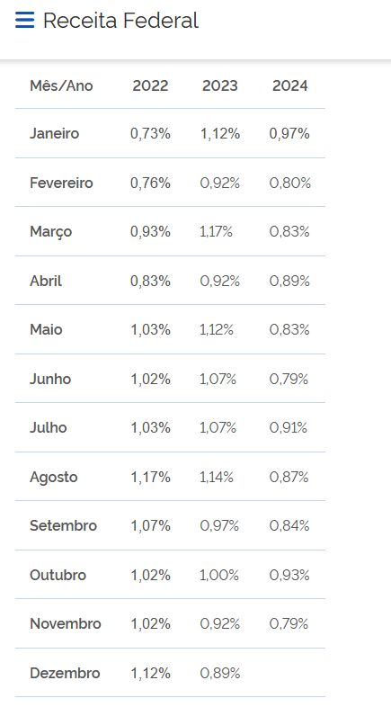

- Abrir a planilha J:\Contabilidade\Impostos\2024\Atualização IRPJ a Compensar - 2024.xls
- Copiar a última planilha e atualizar o nome para o mês seguinte
- Atualizar a data:
- Atualizar a fórmula que aparece em lançar:
- Ir no site da Receita Federal Taxe de Juros SELIC e atualizar a tabela conforme os meses anteriores
- Ver quanto deu em "lançar" e fazer o lançamento no Nectar:
- Conferir se o saldo do Nectar da conta 1102015004 bate com o saldo da planilha
DEMONSTRATIVO DA CORREÇÃO ATUALIZADO ATÉ: 30/11/2024
=ARREDONDAR.PARA.BAIXO(F27-Out!F27;2)

| Débito | 1102015004 | I.R.P.J. - a Compensar | Juros Selic S/ IRPJ a Compensar |
| Crédito | 3108001003 | Juros Taxa Selic | Juros Selic S/ IRPJ a Compensar |